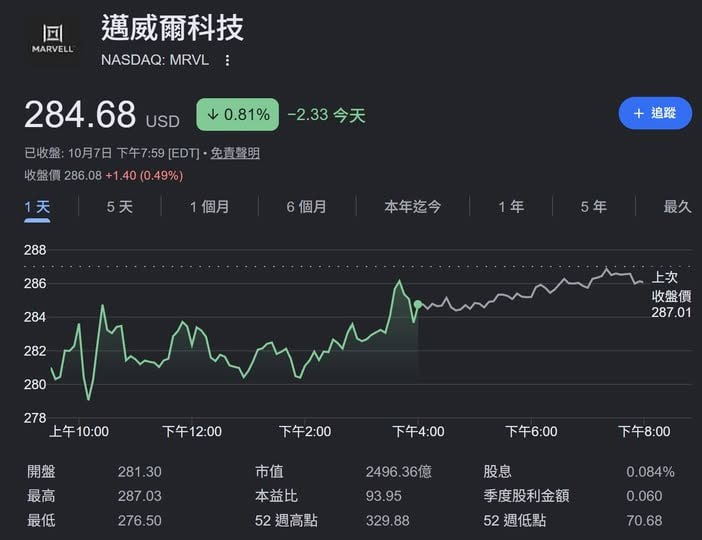

過去 26 小時共 2 則，都在 10/8 中午，同一主題：Marvell（MRVL）投資人日的重點筆記，加上一張 MRVL 股價截圖。內容是邁威爾自稱要在 AI 資料中心「連接」全線通吃，股癌對它連 BMC 都想做感到好奇。
#6470 原文
marvell investor day
重申自己是 connectivity 大玩家，包山包海連 bmc 都想下去做，第一直覺是這市場這麼小意義在哪，進一步思考是會不會這市場後面會變很大他才聞香而來
- asic 已給全部美系 CSP，前十大雲占 2025 capex 60%
- scale across、scale out、scale up、scale in 全吃，櫃內 scale up 100% 走銅
- 推理占資料中心 60%，rack 內記憶體不夠用所以用光連結整個資料中心
- scale up 占流量 85%，scale out 15%，互聯省電是關鍵，省越多 token gen 越多
- 公司認為 NPO 與 CPO 是並行
- scale up optics 在明年會從幾乎為零的營收往數億 USD 跑
- 800G 是 AI 主力，1.6T 正在高速 ramp，稱自己是首家 n3 1.6T DSP 量產者，DSP 已是數十億美元業務，1.6T 需要多顆 DSP 並行最佳化
- 3.2T 存在物理限制，400G/lane PAM4 距離上限約 500m-1km，但大型部署需要 2 km，所以 marvell 推 Coherent-lite 補中間地帶
- 認為每代提升都是有量有價
- 3.2T 需要新材料，1.6T 用 TFLN，3.2T 開始投資電漿子
- AI 伺服器超過 1500 個感測器，需要比傳統 BMC 高 1000 倍的效能，以 OCTEON 為基礎做半客製，已有多家雲端業者專案
- Scale out 以 Teralynx 為主，51.2T 進入第一個完整量產年，今年翻倍、明年再翻倍以上
- Teralynx T100 宣稱業界唯一單晶片 reticle 極限 die 做到 102.4T，內含 512 顆 200G serdes
- SerDes 100/200/400G 電與光皆已在矽上驗證，400G 產品明年量產
#6471 原文（無文字，僅圖片）

圖為 Google 財經的 MRVL 一日走勢：10/7 收 284.68 美元，跌 0.81%（−2.33），盤後 286.08；當日開 281.30、高 287.03、低 276.50；市值約 2,496 億美元，本益比 93.95，52 週區間 70.68–329.88。
講解
背景與查證。Marvell 投資人日於 10/6 在紐約舉行。依第三方逐字稿與 Benzinga 報導，公司把 FY2028 營收目標上調到約 200 億美元（市場原先預期約 182 億），並首度給出 FY2031 營收 700–900 億美元的區間，客製晶片（Custom）FY2031 中位數約 300 億；CEO Matt Murphy 稱 2030 年 AI 可服務市場達 4,000 億美元。貼文沒提這些財測數字，主要記的是技術路線。要注意：這些全是公司目標，不是實績；Benzinga 指出 FY28 目標 10 個月內已上修約 54%，FY31 下緣也比 Piper Sandler 原估的約 450 億高出五成以上，達標需要連五年年增 54% 以上，執行風險不小。
逐點對照原始來源。多數條目與逐字稿相符：
幾個概念說明。
• Scale up / out / across / in：scale up 是同一機櫃（或同一網域）內 GPU/XPU 之間的高速互聯（如 NVLink 這類），頻寬最大、延遲最敏感；scale out 是機櫃之間用交換器組成的大網路；scale across 是跨資料中心連線；scale in 一般指晶片／封裝內部互聯。逐字稿說 scale up 目前「大部分還是銅」，公司稱銅與光的邊界為「copper wall」，隨速度提高，銅線能跑的距離變短，光學會從機櫃之間逐步往櫃內、托盤內推進——這就是 Marvell 押 scale up optics 的邏輯。貼文寫「櫃內 100% 走銅」比原話「largely copper」說得更絕對一點。
• CPO / NPO：CPO（共同封裝光學）把光引擎和交換器或 XPU 封在同一基板，省掉長距離電訊號、最省電但維修與良率難；NPO（近封裝光學）放在旁邊、可插拔性較好。公司觀點是兩者會並行，而不是 CPO 一統。
• DSP 與 PAM4 / Coherent：光模組裡的 DSP 負責把高速電訊號做等化、糾錯再送進雷射。PAM4 每個符號用 4 個電位傳 2 bit，便宜但抗雜訊差、距離有限；coherent（同調）用相位與偏振傳更多資訊，距離長但貴又耗電。coherent-lite 就是取中間：距離比 PAM4 遠（到 2km 等級）、成本與功耗比完整 coherent 低，用來補大型園區式 AI 資料中心的連線缺口。
• BMC：基板管理控制器，伺服器上負責監控溫度、電壓、風扇、遠端開關機的小晶片，傳統上單價低、市場由 Aspeed（信驊）主導。股癌的疑問「這麼小的市場意義在哪」正是重點；Marvell 的說法是 AI 伺服器感測點暴增、管理複雜度大幅提升，需要更強的處理器（用自家 OCTEON 網通處理器改成半客製）。若成立，代表 BMC 可能從低單價零件變成高附加價值晶片；但這段公司說法我無法從來源查證，實際規模與對既有供應商的影響仍待觀察。
• SerDes：串列器／解串器，把並列資料轉成單一高速通道傳輸。每通道 200G→400G 的世代推進，是交換器頻寬（51.2T→102.4T）與光模組（1.6T→3.2T）升級的底層驅動力，也是貼文中「每代提升都有量有價」的來源。
股價脈絡。Benzinga 報導投資人日後 MRVL 一度上漲（文中正文寫近 4%，標題寫 7%，兩者不一致），Astera Labs、Credo 等連接概念股同步走高。圖片顯示 10/7 收盤小跌 0.81%、盤後微幅回升；本益比約 94 倍、過去一年漲幅超過 200%，代表市場已經預先反映不少樂觀預期。
貼文清單
來源